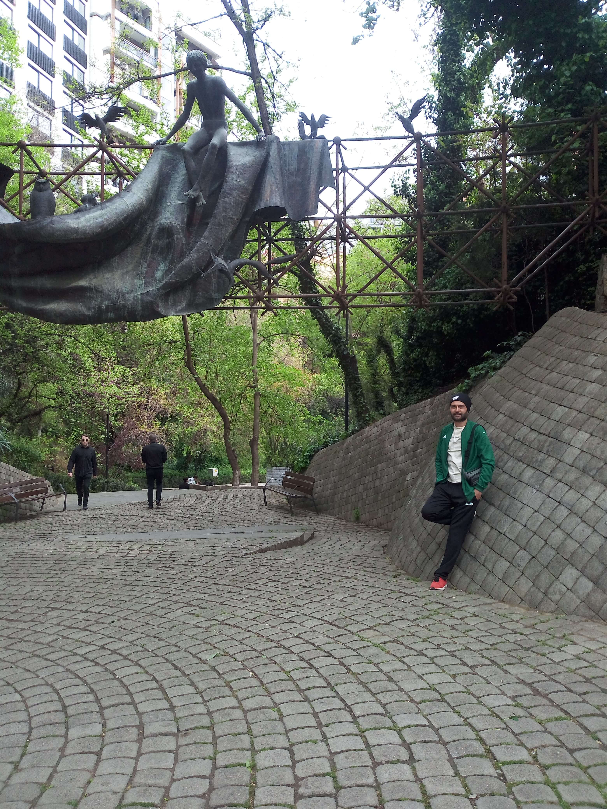

Mziuri Park
Tbilisi · Georgia
Mziuri Park is a green urban space in Tbilisi, offering a peaceful escape from the busy streets of the Georgian capital. With its walking paths, trees, recreational areas, and welcoming atmosphere, the park is a popular place for residents and visitors to relax and spend time outdoors. It provides a pleasant opportunity to experience everyday life in Tbilisi away from the city's more crowded landmarks. The park's natural surroundings create a refreshing atmosphere, especially for those looking to take a break from the pace of city life. Families, joggers, and people enjoying a quiet walk all contribute to its relaxed and welcoming character. Its combination of greenery and open spaces makes Mziuri a pleasant place to explore throughout the day. The park also shows another side of Tbilisi, where public green spaces play an important role in urban life. These photographs capture my personal travel memories of Mziuri Park and its peaceful atmosphere.
My Photo Gallery
Explore my personal photographs and travel memories from Mziuri Park, Tbilisi.
View All Photos ↗